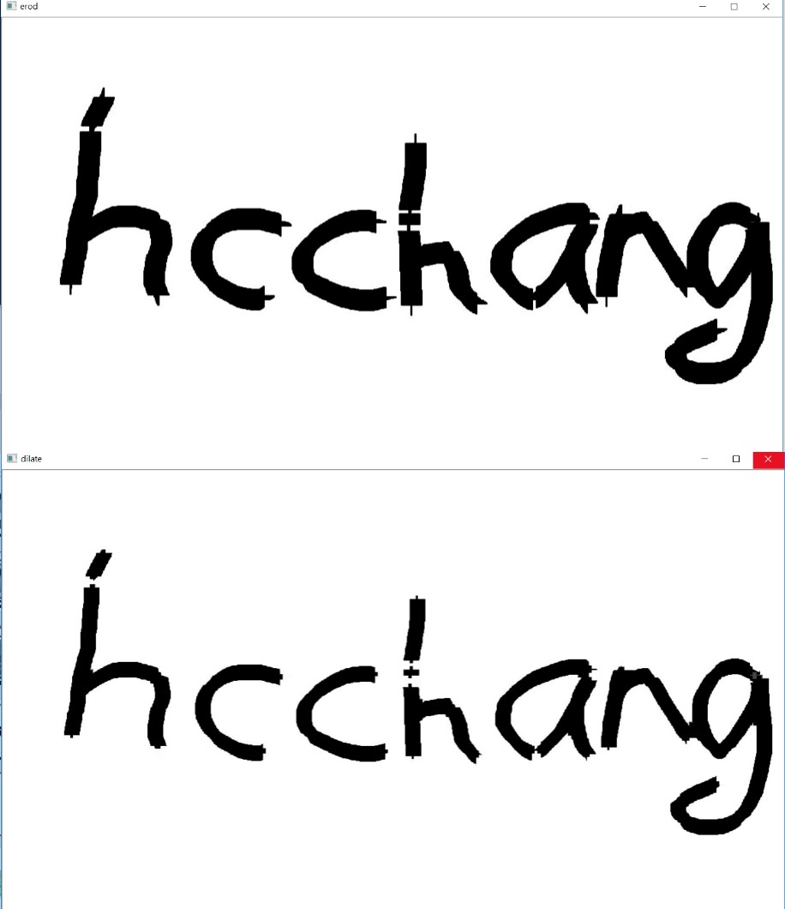

3-5侵蝕與膨脹
程式說明:
運行結果:
底下第一張圖是對圖做了侵蝕雖然字體看起來變粗，主要是因為針對白色區域做侵蝕，所以白色區域變少，
底下第二張圖是對圖做了膨脹雖然字體看起來變細，主要是因為針對白色區域做膨脹，所以白色區域變多，

範例程式:
#include <iostream>
#include <opencv2/opencv.hpp>
#include <opencv2/highgui/highgui.hpp>
int main(int argc, char** argv)
{
cv::Mat img = cv::imread("test.jpg", 0);
cv::Mat imgE, imgD;
if (img.empty())
{
std::cout << "無法讀取圖片" << std::endl;
return -1;
}
cv::Mat element1 = cv::getStructuringElement(cv::MORPH_CROSS, cv::Size(30, 30));
cv::erode(img, imgE, element1);
cv::imshow("erod", imgE);
cv::waitKey(0);
cv::Mat element2 = cv::getStructuringElement(cv::MORPH_CROSS, cv::Size(10, 10));
cv::dilate(imgE, imgD, element2);
cv::imshow("dilate", imgD);
cv::waitKey(0);
return 0;
}